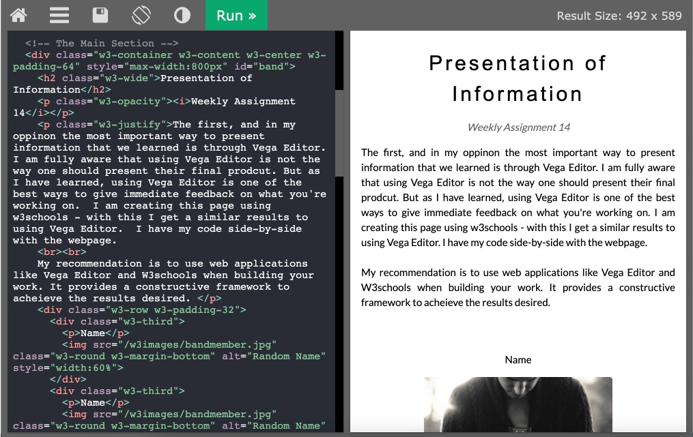

Presentation of Information
Weekly Assignment 14
(1) The first, and in my opinion, the most important way to present information that we learned is through Vega Editor. I am fully aware that using Vega Editor is not the way one should present their final product. But as I have learned, using Vega Editor is one of the best ways to give immediate feedback on what you're working on. I am creating this page using W3Schools - with this, I get similar results to using Vega Editor. I have my code side-by-side with the webpage.
My recommendation is to use web applications like Vega Editor and W3Schools when building your work. It provides a constructive framework to achieve the results desired. For this assignment, I am meant to clearly explain how I would preset my work to different people. Using a source like W3Schools or Vega Editor is what I would use to present work to myself. I feel my adoption of Vega Editor/W3Schools was too late in my coding journey. If I were to have used these applications earlier in the semester I may have saved myself a few headaches.
__
(2) The second way to present information that I am talking about is through RevealJS. Professor Keegan was using Reveal JS frameworks to deliver class materials in a presentation format. The beauty of RevealJS is being able to make a slideshow out of a webpage. In my opinion, Prof Keegan used RevealJS in the perfect way to give the class an introduction to it. Straight from the RevealJS website: "It's a tool that enables anyone with a web browser to create fully-featured and beautiful presentations". And this is not wrong - from my own exploration with RevealJS as well as the ability to look at others through peer review I have learned the best ways to use the framework.
RevealJS has countless ways to customize and personalize your HTML presentation. From theme colors to transitions, special layouts and most beneficial for INFO3402 are the code blocks. Codeblocks allow the viewer to see the code, be able to walk through it, and see the exact impact the code has. Within RevealJS there is Highlight.js with this, while in the code block you can highlight individual lines as a way to present code and its syntax.
__
(3) Finally, using an HTML framework like the one I am using now to present information. HTML stands for Hypertext Markup Language. HTML is the standard markup language for creating web pages. An HTML Webpage gives page structure- structure through sections, headings, links paragraphs, etc.
A webpages core elements come from multiple HTML pages being linked together - through hyperlinks. While HTML has so many aspects to it that allow you to present information in a meaningful way, the integration of HTML with CSS and JavaScript heightens the capabilities of the webpage. CSS controls the appearance of the webpage while JavaScript controls the page’s functionality and HTML is the actual content.
HTML webpages are fantastic ways to display information on a continuous webpage or broken down into separate pages with subsections. It is extremely useful to know how to create a webpage, but more importantly to look at other documentation. By looking at the W3Schools documentation I was able to edit, change and create my own page for this assignment.
__
In conclusion, this semester between Brian and Abe we learned multiple ways to display information and data. Overall the most important thing taught to INFO3402 is to be able to look through the documentation and google searches in order to create the content desired. This alone, giving us the confidence and reassurance that we should be looking up the answers rather than already knowing them was huge.
You have succeeded in giving the class the resources we need to go out and research the information needed for where ever our INFO major or minor takes us. Thank you for a fantastic semester, and have a lovely summer.
W3Schools
RevealJS

HTML

3 WAYS TO PRESENT
Remember to take into consideration the messages you want to get across!

Vega Editor
Web application
"The Vega editor is a web application for authoring and testing Vega and Vega-Lite visualizations."

RevealJS
Framework
"Reveal. js is a framework for easily creating beautiful presentations using HTML."

HTML
Markup Language
"The HyperText Markup Language, or HTML is the standard markup language for documents designed to be displayed in a web browser."
Rachel Silverstein
Weekly Assignment 14 - INFO 3402